Vinci's Voyage
Concept
From dusk til dawn
We started our jorney with a wild concept of dropping Leonardo Da Vinci on to a floating island in an abandoned distopian world, and reimagined what would've been if all his inventions worked. This set design piece attempts to showcase two distinct moment in time of what life would be like in this distopia.

Dusk
Deciding on the two magical moments of dusk and dawn, we challenged ourselves to capture the subtleties between them.
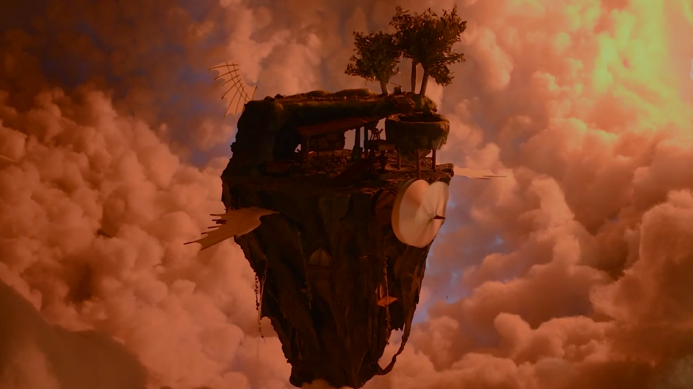
Dawn
By doing so, we were able to dramatise these subtleties to create two distinct and powerful moments.
Process
The struggle to create
Everything on screen is hand crafted. All carved, wired and filmed in a living room on a total budget of $460 (excluding the leased camera).
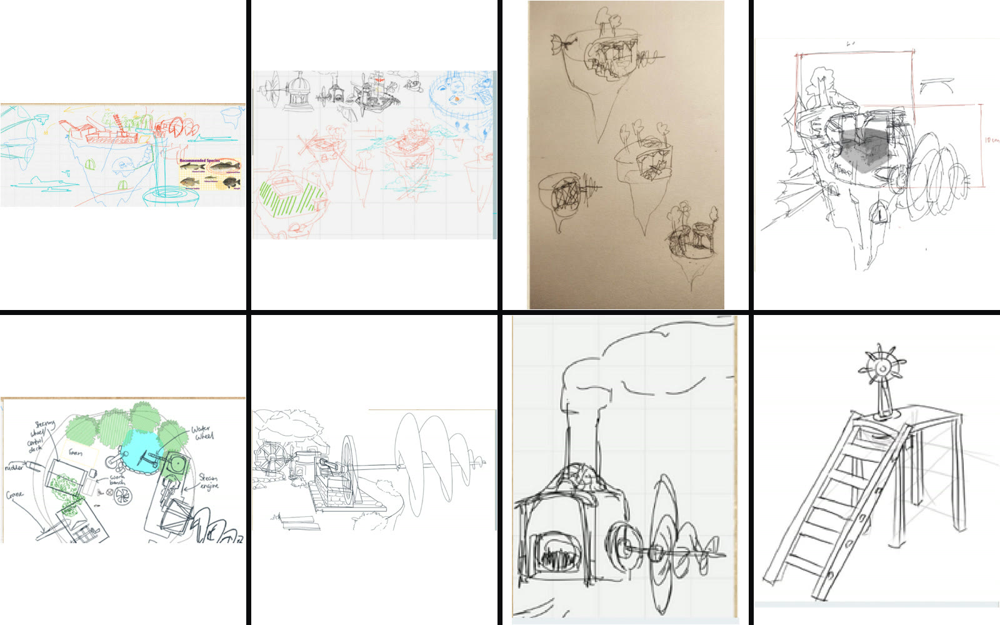
Draft
Early design draft and sketches, I was setting up standards and design directions we would carry through out the whole project. Deciding to stray away from the conventional steampunk style, I wanted to have a very grounded and down to earth feeling that everything felt real and could actually function as Da Vinci occupies the space. Understanding and keeping the scale of 1:50 for everything gave consistency across the props we later made.
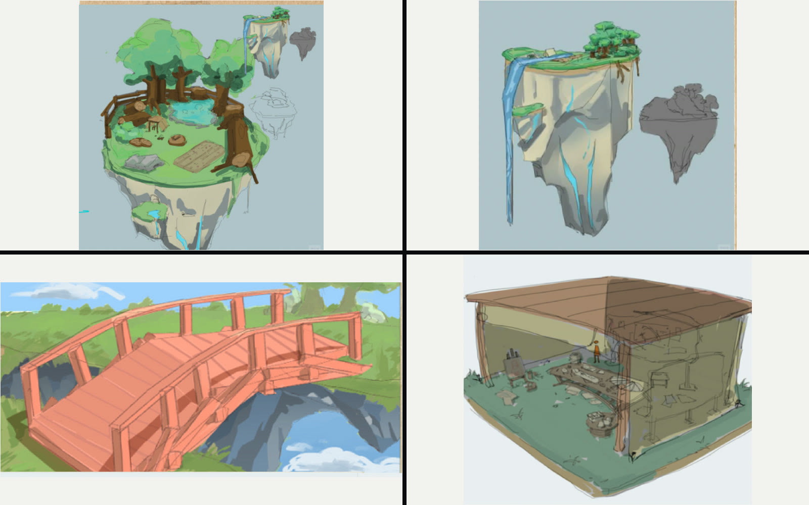
Concept
Early concept renders done with the help from our concept artist Jasmine Lai. Quickly to realise it's missing the clash between the man made structures and the natural island.
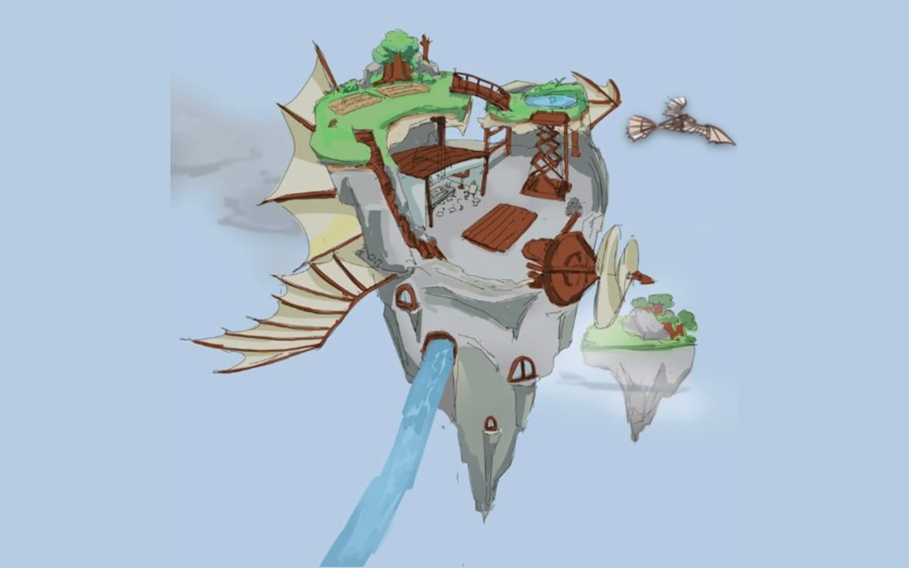
Design
The final concept rend done with the help from Jasmine. I had the idea to carve into the island space, breaking into the natural structure to really showcase the blend of human engineering and nature.
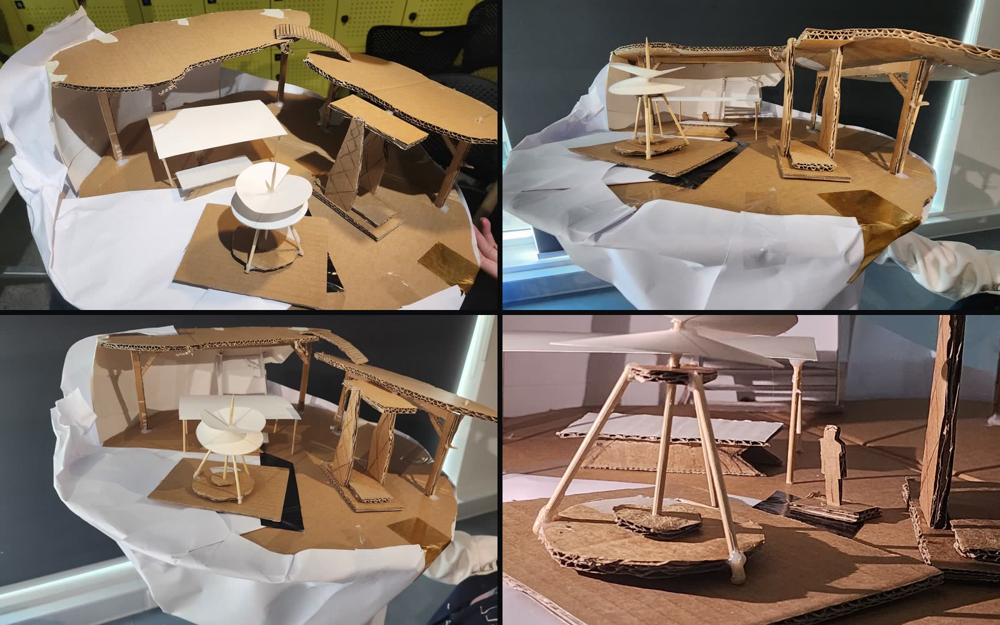
Mock-up
A cardboard prototype built to scale of 1:50. Testing the mass of the island and how our props would occupy the space with a temporary stand in human figure. The human figure we would refer to as Da Vinci, was the key for us to build around. I made sure our team constantly thought about how the spaces and tools were been used, in order to create a convincing narrative.
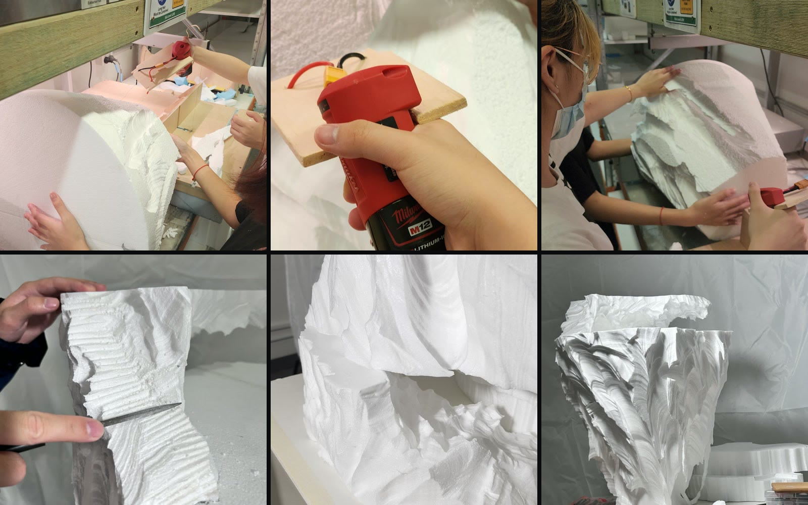
Carving
We started with a massive cyclinder block of styro foam. First cutting out sections with a hand saw to get down to the correct mass. Then I made a DIY hot wire cutter, to be able to cut natural looking curves and ridges that didn't read like a block of foam.
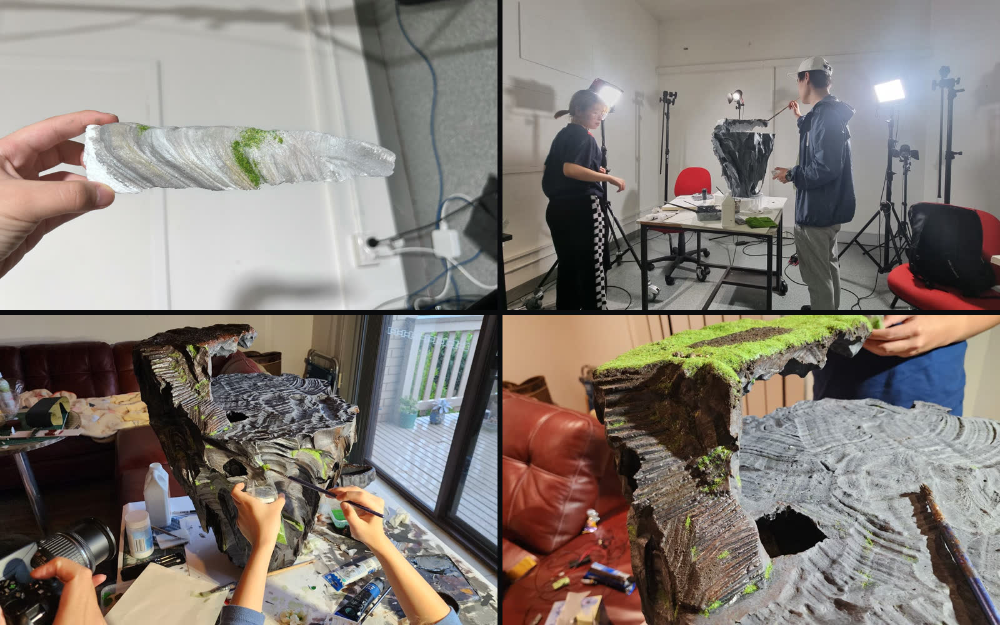
Surfacing
The whole foam block after carving had to be coated with multiple layers of PVA glue to seal it up before any surfacing work can be done. We tested out our greenary on multiple offcuts first before commiting. A finely grounded dirt and glue mixture was then used to create a dirt layer on the island. Lastly we used a synthetic grass power for the grass land.
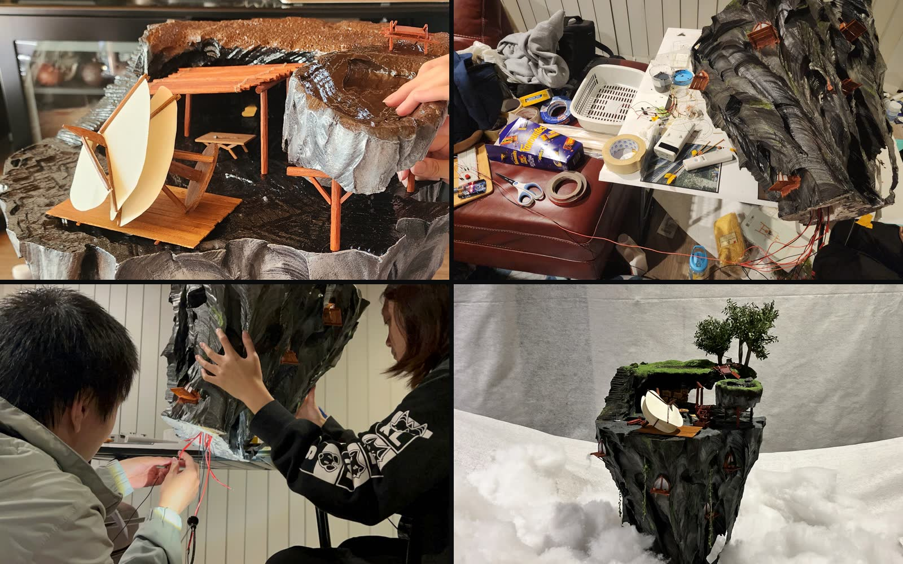
Assembly
Me and my team just prayed everything would come together at this point.
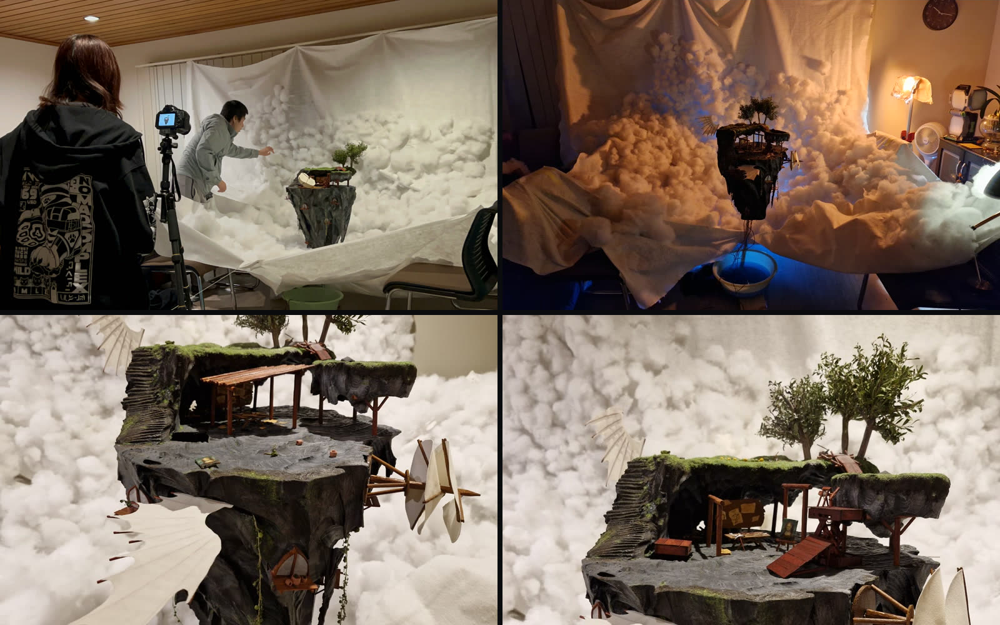
Set
The synthetic cotton cloud as the sky was a idea I had after multiple failed sky background iterations.
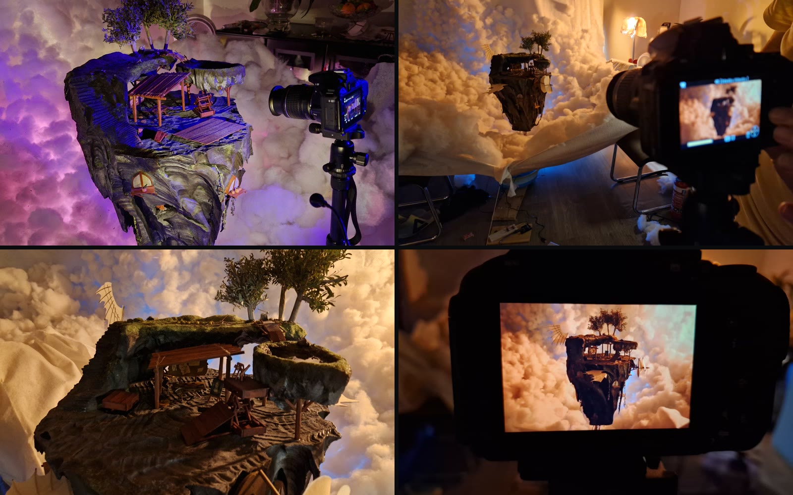
Shoot
The mood of the scene between two moments was greatly enhanced through our lighting.
Detail
The pieces
Everything above in one timeline are some key prgression points. These are some extra bits and pieces that made the project comes together.
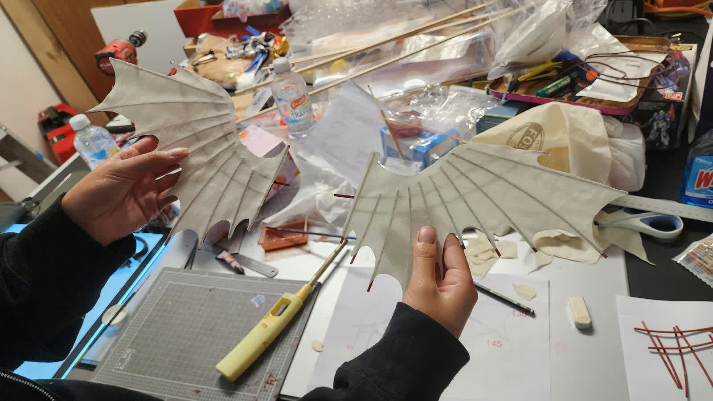
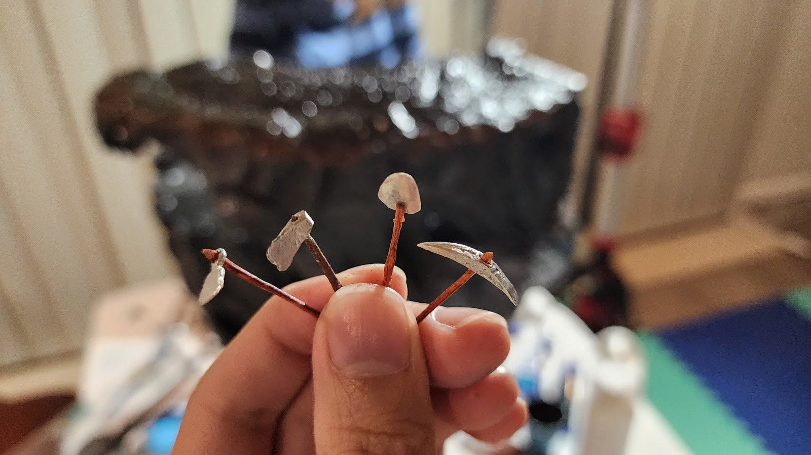
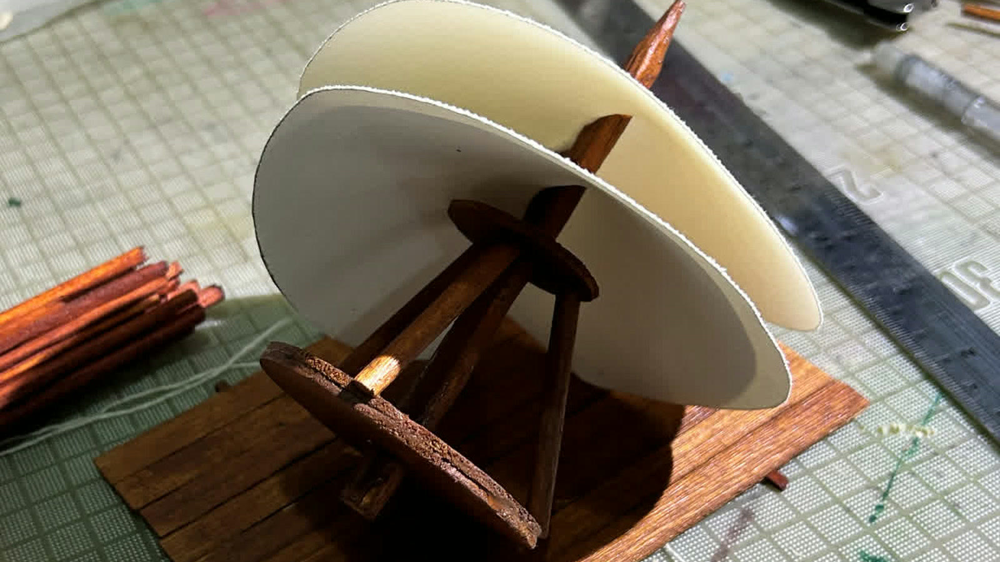
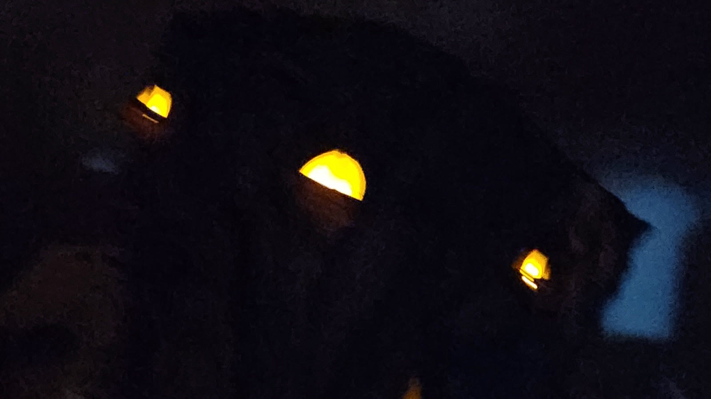
Credits
Team
- DirectorTony Chen
- Line ProducerTony Chen, Jasmine Lai
- Concept ArtJasmine Lai, Nikita Sutedjo, Brandon Pen, Tony Chen
- StoryboardBrandon Pen, Jasmine Lai
- Modelling & SurfacingTony Chen, Jasmine Lai, Nikita Sutedjo, Brandon Pen
- CinematographyBrandon Pen, Jasmine Lai, Tony Chen
- Sound DesignBrandon Pen, Tony Chen
- CompositingBrandon Pen, Tony Chen
- Technical SupportAidan Farrell, Dacheng Ren